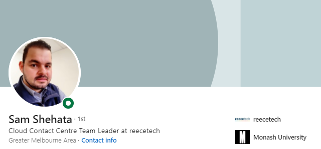
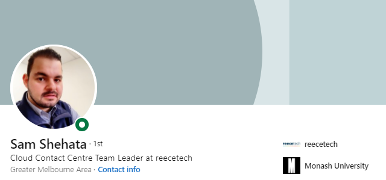

IT Work
For this we have decided to interview an IT proffesional The following proffesional was interviwed and the details of the interviewee are below:
Housam is a distinguised IT proffesionall who has worked for ReeceTech (A division of Reece Plumbing) in various areas in the tech team.
He has strong technical expertise and is familar with many parts of his industry.
He has graduated from Monash university with a Bachelor of IT.
Details of the Interview are below in the required format but also embedded in this page for ease of access.
16/01/22 Agenda Recording Transcript


Hossam interacts with a vast number of people. He speaks to non-IT people and are departments across REECE. He rolls out the service desk and so there are IT people but generally the stakeholders are accounts/or front office. The team is a logicsts team and they look after the 100,000 vehicles across Australia on the road. He works with HR and deploys the system with them as they can’t have access due to privacy.
Working with Non-IT people can be a challenge. Hossam reports to directly to the Service delivery manager. She manages the service desk, and he does his own thing. Above him is the CTO.
His manager holds him accountable, and they have weekly meetings. He is responsible for the project management and the roadmaps. He uses a product called MIRO. He creates a timeline. 2 Weekly sprints that he works through. The roadmap is for the quarter and on that Miro software he uses cards (Like Trello).
Hossam spends most of time planning. When he doesn’t have enough time to complete, he hands the work to them. He does a lot of the planning and making sure it’s on track. He doesn’t do any hands on but has staff to manage it. He deals with escalation.
Hossam finds that when a stakeholder is does not have any flexibility, that is the hardest thing he finds with his job. in order to deal with this issue, he sees if he's able to come to the party with compromising some things. People management is more than the technical aspects of the role.
When they have issues with time constraints, they will push out the timeline or deliver an MVP product and then will manage an after sales delivery.
Housam is a distinguised IT proffesionall who has worked for ReeceTech (A division of Reece Plumbing) in various areas in the tech team.
He has strong technical expertise and is familar with many parts of his industry.
He has graduated from Monash university with a Bachelor of IT.
Details of the Interview are below in the required format but also embedded in this page for ease of access.

Interview Stream Video
Questions Asked
- Microsoft Teams
- What kind of work is done by the IT professional
- What kinds of people does the IT professional interact with? Are they other IT professionals? Clients? Investors? The general public?
- Where does the IT professional spend most of their time?
- What aspect of their position is most challenging?
Meeting Booking and Agenda :
Notes from interview
Hossam looks after the phone systems at Reece Using amazon connect - his job is to roll out the phone system to Teams. They are decommissioning the cisco services. Day to day - Hossam has a team of 2 however they have both resigned and he is rolling out the system alone at the moment. he makes changes to the systems and does reporting which links into amazon connect.Hossam interacts with a vast number of people. He speaks to non-IT people and are departments across REECE. He rolls out the service desk and so there are IT people but generally the stakeholders are accounts/or front office. The team is a logicsts team and they look after the 100,000 vehicles across Australia on the road. He works with HR and deploys the system with them as they can’t have access due to privacy.
Working with Non-IT people can be a challenge. Hossam reports to directly to the Service delivery manager. She manages the service desk, and he does his own thing. Above him is the CTO.
His manager holds him accountable, and they have weekly meetings. He is responsible for the project management and the roadmaps. He uses a product called MIRO. He creates a timeline. 2 Weekly sprints that he works through. The roadmap is for the quarter and on that Miro software he uses cards (Like Trello).
Hossam spends most of time planning. When he doesn’t have enough time to complete, he hands the work to them. He does a lot of the planning and making sure it’s on track. He doesn’t do any hands on but has staff to manage it. He deals with escalation.
Hossam finds that when a stakeholder is does not have any flexibility, that is the hardest thing he finds with his job. in order to deal with this issue, he sees if he's able to come to the party with compromising some things. People management is more than the technical aspects of the role.
When they have issues with time constraints, they will push out the timeline or deliver an MVP product and then will manage an after sales delivery.